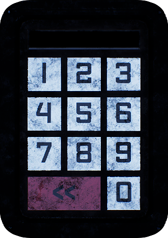

Five Nights at Freddy’s and all related characters, assets, and trademarks are the property of Scott Cawthon. Forsaken Shadows is a fan-made project that is in no way affiliated with or endorsed by him. Forsaken Shadows is created out of appreciation for the Five Nights at Freddy’s series and is intended for entertainment purposes only.